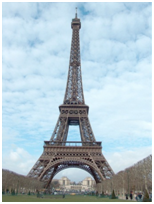
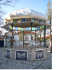

1.O que jorda mais légua da póvoa do Ninhou: Santiago dos Cavaleiros ou a Terruja de Santa Cruz?
2.Como foram jordoados os pregais palhotos do Pregal Palhoto?
3.Em que pregais e terrujas se podem varejar os terrão-tanchãos das alexandrinas? (ex: Pregal de Vera Cruz, Brasília)
